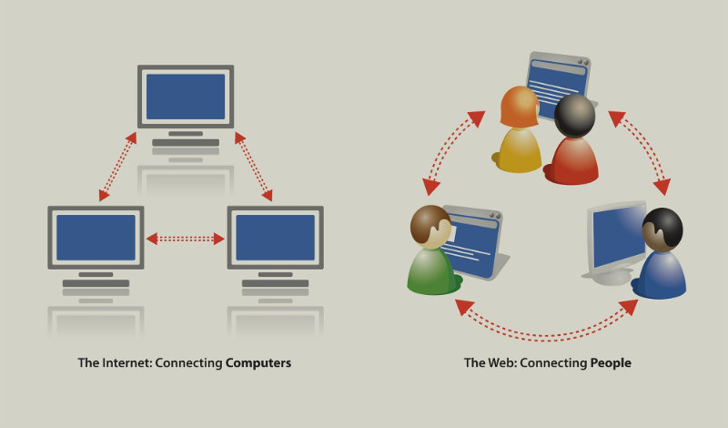
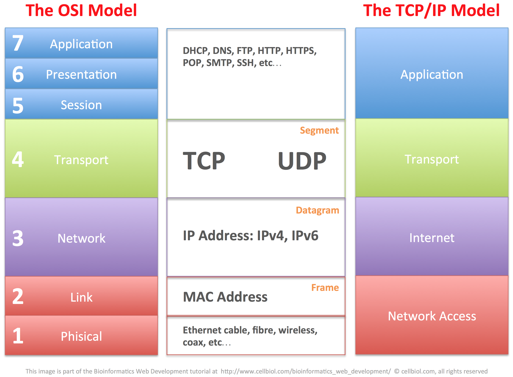
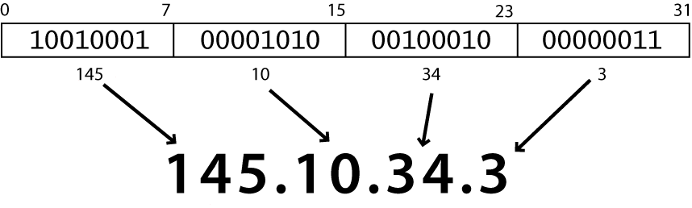

인터넷(Internet) vs WWW
[ From http://techwelkin.com/difference-internet-vs-www ]
- Internet
- 표준화 된 통신 프로토콜을 사용하여 상호 연결된 네트워크로 구성된 다양한 정보 및 통신 기능을 제공하는 글로벌 컴퓨터 네트워크.
- IP (Internet Protocol) 를 사용하는 컴퓨터 네트워크의 연결
- ~Hareware
- 시작 - ARPANET (1969)
- WWW
- 간단하게 Web 이라고도 하며, Internet 을 통해서 정보에 접근하는 한 방법이다.
- HTTP (Hyer Text Transfer Protocol) 을 사용하는 인터넷 상의 서비스
- Software
- 시작 - NSFnet (1993)
- 통신 프로토콜(protocols)의 계층 : IP → TCP/UDP
→ HTTP/FTP/POP/SMTP/SSH...

[from http://www.cellbiol.com/bioinformatics_web_development/chapter-1-internet-networks-and-tcp-ip/the-tcpip-family-of-internet-protocols/ ]
인터넷 프로코콜 (Internet Protocol : IP)
- 두 컴퓨터 사이에서 데이타를 보내는데 사용되는 간단한 프로토콜
- 각 장치는 4 개의 8-bit 숫자(0-255)로 작성된 32-bit IP 주소를 가진다.
 - 인터넷 IP address 찾기: whatismyip.com
- 로컬 IP address 찾기:
- 터미날에 다음을 입력 :
ipconfig(Windows) 또는ifconfig(Mac/Linux)
- 터미날에 다음을 입력 :
전송 제어 프로토콜 (Transmission Control Protocol : TCP)
- IP 위에 메시지 전달을 보장하는 다중화(멀티플랙싱:multiplexing)를 추가
- multiplexing: 여러 프로그램이 동일한 IP 주소를 사용하게 해줌
- port: 각 프로그램 또는 서비스에 주어진 번호
- port 80: web browser (port 443 for secure browsing)
- port 25: email
- port 22: ssh
- more common ports
- 일부 프로그램들(games, streaming media programs)은 TCP 대신에 더 간단한 UDP 프로토콜을 사용
Hypertext Transport Protocol (HTTP)
- 브라우져로부터 보내진, 웹서버가 이해하는 명령 집합
- 일부 HTTP 명령 (당신의 브라우져가 이들을 내부적으로 보냅니다.):
GET /images/logo.png HTTP/1.1<== 서버로부터/images/logo.png 파일을 요청POST filename<==서버에 전달PUT filename<==서버에 업로드
- 웹서버 반응:
HTTP/1.1 200 OK Date: Mon, 23 May 2005 22:38:34 GMT Content-Type: text/html; charset=UTF-8 Content-Encoding: UTF-8 Content-Length: 138 Last-Modified: Wed, 08 Jan 2003 23:11:55 GMT Server: Apache/1.3.3.7 (Unix) (Red-Hat/Linux) ETag: "3f80f-1b6-3e1cb03b" Accept-Ranges: bytes Connection: close <html> <head> <title>An Example Page</title> </head> <body> Hello World, this is a very simple HTML document. </body> </html>
- HTTP error codes : 뭔가 잘못되면, 웹서버가 브라우져에 특별한 오류코드"error code"번호를 반환하며,
그 뒤에 HTML 문서가 따라오기도 한다.
일반적인 오류코드 :Number Meaning 200 OK 301-303 page has moved (permanently or temporarily) 403 you are forbidden to access this page 404 page not found 500 internal server error complete list
World Wide Web (WWW)
- 웹 서버(web server): 웹 페이지 요청을 수신하는 소프트웨어
- Apache
- Microsoft Internet Information Server (IIS) (part of Windows)
- 웹 브라우져(web browser): 웹서버에서 문서를 가져다가 표시함 (웹
브라우져 사용 점유)
- Google Chrome
- Mozilla Firefox
- Microsoft Internet Explorer (IE)
- Apple Safari
- Opera
도메인 이름 시스템(Domain Name System : DNS)
- 숫자의 연속인 IP주소를 일일이 외울 수 없기 때문에 쉽게 기억할 수 있는 도메인 주소 체계가 만들어졌습니다.
DNS(Domain Name System)은 도메인이름의 수직적인 체계를 말합니다.
Example: www.hansung.ac.kr → 220.66.102.11 (IP lookup)

[ 이미지 출처 http://www.krnic.or.kr/

- localhost (127.0.0.1) : 브라우져가 작동되는 컴퓨터 자체에 설치되어 가동 중인 웹서버 IP 주소
Uniform Resource Locator (URL)
- 웹사이트에서 문서의 위치를 식별
- 기본적인 URL:
http://jun.hansung.ac.kr/SWP/intro.html ~~~~ ~~~~~~~~~~~~~~~~~ ~~~~~~~~~~~~~~~~~~~ protocol host path
- 브라우져에 이러한 URL 을 입력하는 것은:
- DNS server에게 jun.hansung.ac.kr 의 IP 주소를 묻는
것이고
- 그 IP 주소의 port 80 에 연결하고
- 웹 서버에게 GET /SWP/intro.html 을 요청하고
- 그 결과 페이지를 스크린에 표시합니다.
- DNS server에게 jun.hansung.ac.kr 의 IP 주소를 묻는
것이고
Web languages / technologies
- Hypertext Markup Language (HTML): 웹 페이지 작성에 사용
- Cascading Style Sheets (CSS): 웹 페이지의 스타일 정보
- JavaScript : 웹 페이지를 대화형으로 프로그래밍 가능하게 하는 언어
- PHP Hypertext Processor (PHP): 웹 서버에서 페이지를 동적으로 생성
- Asynchronous JavaScript and XML (Ajax): 웹 응용을 위한 데이타 액세스
- eXtensible Markup Language (XML): 데이타 정리를 위한 메타 언어
- Structured Query Language (SQL): 데이타베이스와 상호 작용에 이용